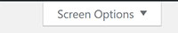

“Ninja Forms addon - Confirmation & Reminder Documentation by “Treehugger” v1.2
“Ninja Forms - Confirmation & Reminder”
Created: 09/03/2017
Updated:
01/07/2018
By: Alex Romijn
Email: plugins.service@treehugger.nl
Thank you for purchasing my plugin. If you have any questions that are beyond the scope of this help file, please feel free to email via my user page contact form here. Thanks so much!
Table of Contents
- Intro
- Installation
- Install the plugin via Wordpress
- Install the plugin with FTP
- Setup a form
- Create a form
- Setup confirmationmail
- Add the action
- Configure the action
- Configure settings
- Configure redirect settings
- Configure reminder settings
- Configure confirmation settings
- Configure notification settings
- Configure advanced settings
- Publish your form on a page
- Submissions & confirmations
- Add functionality with hook
- Troubleshooting / FAQ
- Support
- Changelog
A) Introtop
What is Ninja Forms - Confirmation & Reminder
The addon Confirmation & Reminder for Ninja Forms is a great plugin to provide some extra functionality in Ninja Forms. The addon creates a new action to send a confirmation mail after submitting a form. In this confirmation mail the user will be provided an unique link. After clicking this link the user will be confirmed. By showing a new column in the submission view you can see which user of the form has confirmed their submission. You can use this for example for forms in which people can sign up for events. Ofcourse it can happen that someone forget to confirm, therefore I provided a reminder function. This mail will be send after a specific amount of days (you can change that). You can customize this mail as well. You can also hook in the confirmation with your own function.
You can check de demo form here: https://demo.treehugger.nl/
Features
- Easy integration with Ninja Forms
- Setup and customize a new action to send a confirmation mail
- Configure how many days to wait till reminder is send
- Customize the reminder mail
- Redirect to different pages for succes with confirmation, already confirmed or errors.
- Hook into the confirmation with your own function if you want to expand the functionality
- Overview of confirmation / reminder status in the submission view.
- Override the reminder by sending reminder immediately
- Sending a custom notification when someone confirmed
Requirements
- Wordpress 4.4+
- Ninja Forms 3.1 +
- (use of the Store Submission action is needed to make this addon work, this is active by default when creating a new form)
B) Installationtop
There are two ways to install the plugin.
Install the plugin via Wordpress
Follow the following steps:- Step 1: Login to your Wordpress Admin Panel and go to Plugins > Add New > Upload Plugin
- Step 2: Find the nf-confirm-and-remind.zip file on your computer and click Install Now
- Step 3: Click Activate to activate this plugin.
Install the plugin with FTP
Follow the following steps:
- Step 1: Login to your hosting space via an FTP client (for example: FileZilla, Total Commander)
- Step 2: Unzip the nf-confirm-and-remind.zip file to your "wp-content/plugins" folder.
- Step 3: Login to your Wordpress Admin Panel and go to Plugins
- Step 4: Activate the newly installed plugin by going to Plugins > Installed Plugins and clicking the Activate button.
Now you're good to go to the next step.
C) Setup a formtop
Let's setup a form in Ninja Forms so we can add our action to it.
Create a form
- Step 1: Login to your Wordpress Admin Panel and go to Ninja Forms > Add new
- Step 2: Click on 'Add new'
- Step 3: Select 'Blank Form' to start from scratch
- Step 4: Place the fields you want in the form. You can find more here about building a form in the documentation of Ninja Forms.

- Stel 5: Click on Done and after that on Publish.
Now let's add our action to it, so people who fill in the form get an mail with confirmationlink.
D) Setup confirmationmailTop
Follow the next instruction to add a confirmation mail and reminder to your newly created form
Add the action
- Step 1: Click on the tab 'Emails & Actions'

- Step 2: You now see a list of 'actions', like 'succes message', 'email' and 'Store Submission'. These three are default when creating a form. The 'Store Submission' is an action which saves submitted data to the database. This action is mandatory for this plugin to work. If this action is somehow missing. Click on the Add button in the right bottom corner of the screen.

And then add the 'Store Submission' action by clicking on the button. It will be added to the action list.

- Step 3: Now let's add the 'Confirmation & Reminder' action. Click on the Add button in the right bottom corner of the screen and select 'Confirmation & Reminder'.
- Step 4: After adding, a side window shows where you can adjust the setting of the action. If you don't see it, then just click on the config icon
 on the side of the action.
on the side of the action.
Configure the action
- Step 1: First we have to let the addon know where to send the confirmation mail to. So fill in the To field. You can use merge tags to let the system know which field it has to connect to. Click on the icon in the fieldbox.
And then select the correct field:
- Step 3: Now fill in the subject you want
- Step 4: In the field Email Message, you can write the e-mail the person will get after submitting the form. You can type anything you want. The only thing important here is, that you insert a small piece of code, so the system will replace that with an unique link. This code is {link}. Easy isn't it? You can place it wherever you want. If you send HTML mail, then you can use it also in the code. Like: <a href="{link}">{link}</a> or <a href="{link}">click here</a>

The following sections are setup like the structure available in the action settings. We arranged this in a more visual way for easy configuration:
Configure redirect settings
- Step 1: The next step what we need to do is to build three new pages. These pages will be used to send the user to when a confirmation is done succesfully or generated an error. We need three pages: 1) a page to show after a confirmation is done succesfully 2) a page to redirect to if the user is already confirmed 3) a page when an unknow error has occured. You can find more on creating pages in the Wordpress documentation.
Now after creating the pages go to the 'Redirect settings' section:
- Step 2: After you've created the pages, you can fill in the URL of the pages in the correct fields (like: http://yourpage.com/mypage).
Configure reminder settings
- Step 1: The next part is setting the reminder correctly. Go to the reminder settings section:
- Step 2: Now first, we set the time between sending the form and when the reminder should be triggered. You see a field like the one below, marked by the red arrow. You can set the number of days. Starting from one day after a form has been submitted.
- Step 3: In the previous part you already has setup when the reminder has to be send. Now configure the email which will be send. You can do that by setting the subject field and message field.
- Step 2: Use {link} to place the correct confirmation link in the message.
Note that the reminder is run through a cron job and will check every hour if it has to send reminders. The limit per cycle is adjustable, but default is 100. You can adjust this in the Ninja Forms > settings:
The limit can ben depending on the server you use and the maximum emails you can send. Some hosting providers have restrictions.
Configure after confirmation settings
- Step 1: The next part is setting the after confirmation settings correctly. Go to the after confirmation settings section:
- Step 2: You see two options:

If you enable the first one 'enable delete after confirmation'. The submission will be deleted after the user will confirm the entry. - Step 3: If you enable the second, you will find additional configuration.
Now you can adjust the time it will take to delete the entries which aren't confirmed. For example. If someone submit the form and doesn't confirm. The plugin will check the submission for entries who have to be deleted after 5 days (or other amount of days used) if not confirmed. This way the data in the database isn't longer stored then necessary and you can comply with laws on privacy.
Configure notification settings
- Step 1:
Now lets configure the notification part. When a user confirms you can send a confirmation directly to for example an administrator. Click on the 'notification settings' section to expand those settings.
- Step 2:
Toggle 'enable notification' to show more settings.
- Step 3:
Now change the settings like you want it. First fill in 'send notification to'. Use an email address where you want to send the notifcation to. In the subject field set a subject. For example 'notification'.
- Step 4:
Now we going to setup the notification mail. You can fill in the text of the email and in which format it has to be send (html or plain text).
You can use only text, but you can also insert a tag to replace it with the email address of the person who confirmed with a direct link to the admin and edit screen of the specific submission. You can use {user:confirmed} or select it with the merge tag dialog by clicking the button
Configure advanced settings
- Step 1: Click on 'Advanced settings' to toggle the advanced settings
- Step 2: Change the fields in this setting with the settings you want. You can adjust the From name, From address, the format in which the mail is send (default HTML) or use the CC and BCC fields, to send a copy. Please note that some hosters override senders (see Ninja Forms troubleshooting section for more information).
E) Publish your form on a pagetop
Now it's time to publish your form on a page. Follow the steps below.
- Step 1: Login to your Wordpress Admin Panel and go to Pages > Add new
- Step 2: Click on the Add Form button

- Step 3: Select your form and click on Insert
- Step 4: Click on Publish. Good job! Your page with the form is ready. Click on View Page to go directly to your page and let's try it out.
Fill in some details and your email and send. Now check your inbox for the confirmationmail with link.
F) Submissions & confirmationstop
When a user has confirmed, these details will be saved. The administrator can check the submissions to see which user has been confirmed and which one not. The table will show which user is confirmed, and how long it takes before sending a reminder. You can find the submissions by login in the admin panel and go to Ninja Forms > Submissions. After that, select the form from which you want to show the details.
If you don't want to wait x days till the reminder is send to a specific user, then there is also an overide possibility.
Click on the mail icon in the Reminder column. This will send the reminder.
Note: If you don't see any columns in the table go to 'Screen Options' in the right top corned of the screen.

After that check the columns 'Confirmed' and 'Reminder'. Press Apply after that to show these columns.
G) Add functionality with hooktop
We provide a hook into the confirmation process, so you can add extra functionality. For example, when someone confirms, you can let a function run to send an extra e-mail or use custom API's to send the data to another platform.
do_action('nf_confirmmail_confirmed_after_success', $formid, $actionsettings, $sub);
For example, you can use the following code to add an action to this action hook:
// set the nf_confirmmail_confirmed_after_success callback
function action_nf_confirmmail_confirmed_after_success($formid, $actionsettings, $sub ) {
// do what you want here...
}
// add the action
add_action('nf_confirmmail_confirmed_after_success','action_nf_confirmmail_confirmed_after_success', 10, 3 );
And remove the action with:
// remove the action
remove_action( 'nf_confirmmail_confirmed_after_success', 'action_nf_confirmmail_confirmed_after_success', 10, 3 );
The hook has three variables to use.
- $formid: The formid from the form which was send
- $actionsettings: All the configuration details from the form which was send
- $sub: this contains the submission object, see this link for more information.
Additionally, you can also use a hook to target one specific form by adding the ID of the form: 'nf_confirmmail_confirmed_after_success_{formid}.
For example with a form with ID 5:
// set the nf_confirmmail_confirmed_after_success_5 callback
function action_nf_confirmmail_confirmed_after_success($formid, $actionsettings, $sub ) {
// do what you want here...
}
// add the action
add_action('nf_confirmmail_confirmed_after_success_5','action_nf_confirmmail_confirmed_after_success', 10, 3 );
You can use the same variables as 'nf_confirmmail_confirmed_after_success'.
Another hook you can use is the nf_confirmmail_delete_after_confirmed hook.
do_action('nf_confirmmail_delete_after_confirmed',$formid);
For example, you can use the following code to add an action to this action hook:
// set the nf_confirmmail_delete_after_confirmed callback
function action_nf_confirmmail_delete_after_confirmed($formid ) {
// do what you want here...
}
// add the action
add_action('nf_confirmmail_delete_after_confirmed','action_nf_confirmmail_delete_after_confirmed', 10, 1 );
You can use this to add extra functionallity when someone confirmed and the entry was deleted. Like, for example sending a notification mail to an administrator. Or use it to call some external API.
H) Troubleshooting / Questionstop
- It is not working
Check if you have the action 'Store Submission' added to your form. The addon needs this one to work. If it still not work, check if you filled in the advanced settings correctly. - The plugin gives an error when activating
At the moment we don't have any known incompatibilities with other plugins. Ofcourse it can happen. Please contact us when experiencing problems. Also try to disable other plugins to be sure if it is a conflict between plugins. - Emails are sending from an other address then the settings
Unfortunately this can happen due to settings of your server or host. Settings by the host or server can replace the sending address as a way to stop spam. Please contact your host or adjust your server settings. - I have some feature requests or want to give some feedback
We love to hear feedback or feature requests for future versions of this plugin .
I) Supporttop
Thank you so much for purchasing this plugin. I'd be glad to help you if you have any questions relating to this plugin. Please contact me at plugins.service@treehugger.nl (language: dutch or english)
J) Changelogtop
### 07/22/2018 ### v 1.3
bugfix: cron job fix to check for reminders, limit per cycle is adjustable
bugfix: fieldvalues mergetags were not shown in reminder mail. New function implemented to replace those tags
new: delete on confirmation & delete after .. days
new: two merge tags for better implementation for creating confirmed url
new: hook added to do something after deletion entry on confirmation: nf_confirmmail_delete_after_confirmed
### 12/27/2017 ### v 1.2
bugfix: fix for incorrect form data
new: grouped action settings for better visual representation
new: add notification on confirmation: when someone confirms a submission, you can notify for example a contact person
documentation: updated the documentation according to the changes made
### 10/01/2017 ### v 1.1
new: action hook added specific for one form: nf_confirmmail_confirmed_after_success_$formid
Alex Romijn - Treehugger